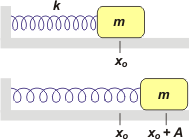
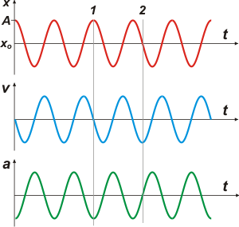

NO ME SALEN
PROBLEMAS RESUELTOS DE FÍSICA DEL CBC
(Movimiento oscilatorio armónico)
|
|

|
| |
FIS 96 (d6.01) - Un cuerpo de masa m sujeto a un resorte de constante k se encuentra apoyado sobre una superficie horizontal sin rozamiento
(ver figura). Se desplaza al cuerpo de su posición de equilibrio una
distancia A y se lo deja en libertad.
a) ¿Qué tipo de movimiento efectúa el cuerpo? Escribir la ecuación
de Newton y obtener x(t). Calcular la frecuencia de oscilación y el
período en función de k y m.
|
 |
b) ¿En qué puntos la aceleración del cuerpo es nula y en cuáles es
máxima?
c) ¿En qué puntos la velocidad es nula y en cuáles es máxima?
d) Graficar la posición, la velocidad y la aceleración en función del tiempo. |
|
Bien, este asunto del movimiento unido a un resorte ideal es el ejemplo arquetípico del movimiento oscilatorio armónimco simple.
Vamos a arrancar por el final, por los gráficos, que me parece que nos van a despejar muchas dudas. |
|
|
|  |
Como es nuesra costumbre, grafiqué en tandem: los tres gráficos en la misma escala de tiempo y en el orden indicado.
En rojo tenés la posición el cuerpo se larga desde A, pasa rápidamente por la posición de equilibrio, xo, se pasa de largo y se frena a una distancia A pero del otro lado, rebota y así sigue infinitamente.
Fijate el instante que marqué como 1. Ahí el cuerpo se halla en un extremo del recorrido, y su velocidad vale 0, y su aceleración máxima.
En el punto 2, el cuerpo está pasando por xo, su velocidad es máxima y la aceleración nula. |
|
|
|
Hay más detalles para mostrarte pero los vamos a ir viendo de a poco.
La ecuacion de Newton es muy sencilla ya que la única fuerza que actúa sobre el cuerpo en la dirección x es la fuerza elástica, que responde a la ley de Hooke.
Fe = − k x
Fe = m a
De donde:
m a = − k x (ecuación de movimiento)
De allí se derivan las ecuaciones de movimiento operando con ecuaciones diferenciales, cosa que no tiene interés para este curso. Acá están:
|
|
|
| |
x = A cos ( ω t + φ)
v = − ω A sen ( ω t + φ)
a = − ω² A cos ( ω t + φ) |
|
las tres variables cinemáticas como función del tiempo |
|
|
|
Donde A es la amplitud del movimiento (en nuestro caso, la distancia a xo desde donde fue soltado); ω es la frecuencia angular (porque todo movimiento armónico se asocia a un giro de tipo MCU); φ es la fase inicial, que calcularemos para cada caso).
Habrás notado que las ecuaciones de velocidad y aceleración se obtienen derivando sucesivamente de la de posición.
ω describe cuán rápido o lento oscila el cuerpo, y se relaciona, justamente con la masa del cuerpo y la dureza del resorte. Cuanto más duro sea el resorte más rápido oscilará el cuerpo. Cuanto más masivo sea el cuerpo más lenta será la oscilación. La relación exacta es ésta: |
|
|
|
|
|
| Resulta interesante destacar que ω no depende de las condiciones iniciales del sistema (cómo se lo puso a oscilar), en cualquier condición valdrá lo mismo. También se lo llama pulsación, o fecuencia propia, o frecuencia natural. |
|
|
| |
|
 |
| DESAFIO: ¿Cambia ω si el movimiento parte con una amplitud doble? |
|
| Algunos derechos reservados con anticipación.
Se permite su reproducción citando la fuente. Última actualización abr-16. Buenos Aires, Argentina. |
|
|
|